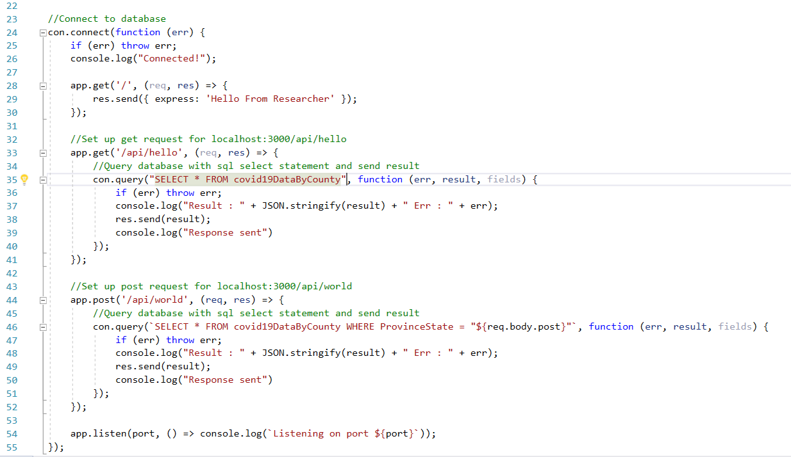

| API |
Requires express, body parser, and MySQL
Creates secure connection to the database
Two endpoints:
GET and POST
GET request queries database and selects all rows
from the table, sending result to front end
POST request queries database and selects rows
specified by ProvinceState parameter, sending result to front end
Column value set equal to template literal,
variable for the POST request
In future iterations, the user will also be able to
select a county and date range
